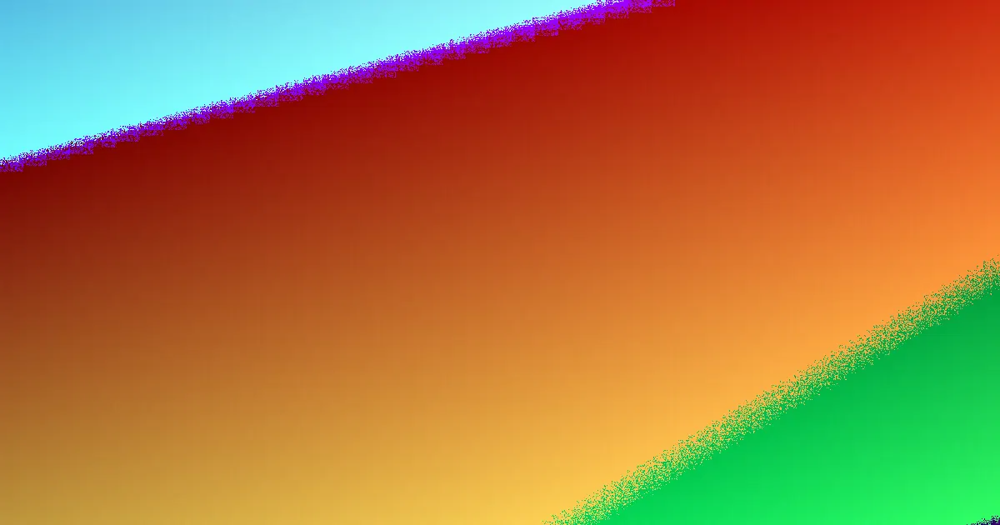

In Canberra, cutting a tree down is only one path among several. Public trees are protected, and private trees can also fall under ACT rules, so status checks come before method. Height alone will not produce a dependable price. A comparable quote depends on a written scope covering ownership, access, nearby assets, stump handling and waste, with provider credentials kept at provider level.
For local buyers, tree removal canberra pros and cons a balanced way to judge whether removal earns its place
Tree Removal Canberra Pros and Cons Explained
The useful question is not which cut is cheapest but which route matches the condition, status and end use of the space. A leaning trunk over a roof argues for urgency and assessment. A dense canopy shading a deck may only need selective pruning. A paved entertaining area may turn leftover stump and roots into the deciding item.
Weigh each option against four tests: safety, approval risk, future use of the ground, and how much guesswork remains in the quote. For a companion angle on errors that inflate cost, see tree removal canberra common mistakes.
- Fast relief can be a pro, yet it can hide approval and access issues.
- Conservative care can keep shade and habitat, but may not suit a failed or badly placed tree.
- A tidy written scope costs time up front and usually reduces later surprises.
When each route tends to help or hinder
Removal has a clear advantage where a tree is dead, structurally compromised or plainly wrong for the location. Its drawback is permanence: shade, screening, soil stability and habitat are removed at the same time as the hazard.
Pruning can preserve value while solving clearance, deadwood or canopy problems. The trade-off is repeat cycles, because regrowth and seasonal shedding may return the same conversation.
Arborist assessment is the low-regret option when health, risk, protected status or development impact is unclear. It can slow the job, but it can prevent the wrong method being sold as urgent.
Stump grinding matters where grind depth, surface roots, backfill and reuse decide whether the area becomes lawn, paving or garden beds. Storm triage belongs in a separate lane because fallen material, visible lines and make-safe priorities change the first response.
Cost, risk and approval trade-offs
There is no dependable quote from height by itself. A tall tree with open access may be simpler than a modest tree hemmed in by fences, roofs, services or a narrow gate. Price moves with the whole task: dismantling method, rigging, waste cartage, stump material, ground repair and how cleanly the site must be left.
Approval risk sits beside price. Street and public trees are off-limits for resident cutting, while private specimens may still need checks under current ACT guidance before major work. Even poor condition is not a free pass, because a dead native tree can still carry obligations.
- Lower assumed risk: verified status, clear access, defined waste, no adjacent assets.
- Higher assumed risk: boundary uncertainty, nearby lines, storm debris, constrained equipment path.
- Better comparisons: identical photos, notes and outcome wording sent to every provider.
Who this suits
This framing fits ACT owners and occupiers preparing a responsible enquiry rather than chasing a headline figure. It helps people comparing pruning against removal, deciding whether a stump should be ground, or unsure whether assessment should precede major work.
It is most relevant where a tree may sit near public land, a boundary, roofs, fences or services, or where storm damage has created make-safe questions. In those cases, record what is confirmed, what is assumed and what must be verified by the operator in writing.
Questions that keep quotes comparable
Ask every provider to respond to the same pack: ownership result, protected-status check, whole-tree and trunk photos, access limits, visible services, desired finish, stump preference and waste expectations. Then request method, approvals, credentials, insurance, inclusions and exclusions in writing.
Keep proof attached to the actual contractor, not borrowed from a directory or article. If two quotes use different assumptions, the cheaper number may simply exclude cartage, clean-up, backfill or repair.
- Verify status. Record whether the tree is public or private and check the current ACT pathway before major work.
- Match route to outcome. Choose removal, pruning, assessment, stump or urgent language based on the goal rather than an assumed cut.
- Document the site. Capture whole-tree, trunk and access images plus nearby roofs, fences, services and visible lines.
- Set scope in writing. List stump depth, grindings, backfill, logs, mulch, clean-up and site repair as included or excluded.
- Compare identical packs. Send the same facts to each provider and read credentials, insurance and exclusions at provider level.
| Route | Main advantage | Main drawback | Best use |
|---|---|---|---|
| Removal | Resolves failed or unsuitable trees | Permanent loss of shade and screening | Dead, compromised or badly placed specimens |
| Pruning | Keeps tree value while managing clearance | Repeat maintenance over time | Deadwood, canopy and roof clearance goals |
| Assessment | Clarifies risk before method is chosen | Adds a planning step | Uncertain health, status or development impact |
| Stump work | Prepares ground for reuse | Depth, grindings and backfill need detail | Paving, lawn or garden after felling |
| Urgent triage | Prioritises unsafe fallen material | Different from planned quoting | Storm damage, visible lines, make-safe needs |
Common questions
Is felling always the safest option? No. Where health, risk or status is uncertain, assessment may prevent an unnecessary or non-compliant cut. Removal suits dead, structurally compromised or unsuitable trees, while pruning can manage clearance and canopy concerns.
Why can similar trees receive very different quotes? Height alone is unreliable. Access, dismantling method, nearby assets, stump handling, waste cartage and finish change the work. Quotes become comparable only when each provider prices the same written scope.
What should stay out of assumptions? Keep approval checks, visible services, storm make-safe needs, credentials, insurance, waste and ground repair explicit. If an item is not written as included or excluded, treat it as unresolved.
An independent ACT planning guide for comparing tree work routes before engaging a qualified operator.